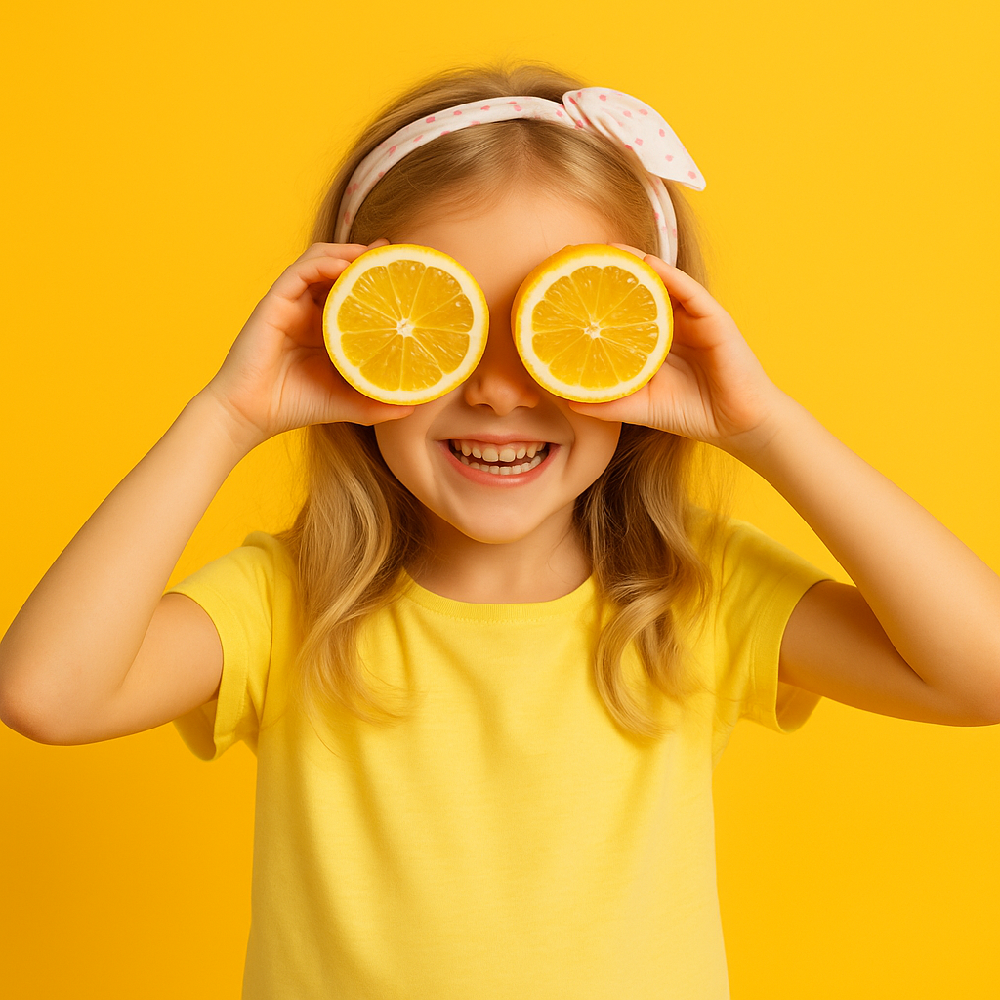
خواص پرتقال و لیمو برای کودکان
پرتقال و لیمو علاوه بر ویتامینها، فیبر غذایی دارند که هضم بهتر و تنظیم قند خون را تسهیل میکند. همچنین آنتیاکسیدانهای موجود در آنها به سلامت قلب و کاهش التهابات کمک میکنند.
مطالعه مطلب>مهد کودک ما با بهره بندی از امکانات و شیوه های روز دنیا در تبریز آماده خدمت رسانی به فرزندان ایران زمین است
ثبت نام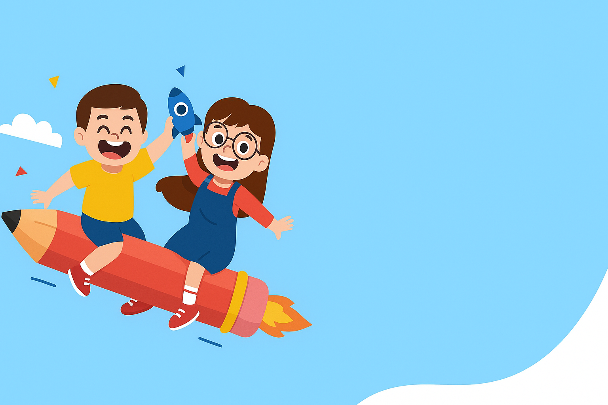
برای پیشرفت دلبند شما
چه برنامه هایی داریم
آموزش شطرنج باعث افزایش تمرکز و دقت در کودکان میشود. کودکان یاد میگیرند همکاری و اولویت ارزیابی کنند.
هر چه امکان پرداختن به بازیهای سالم و سازنده بیشتر باشد، فکر و ذهن و جسم بهتر پرورش مییابد.
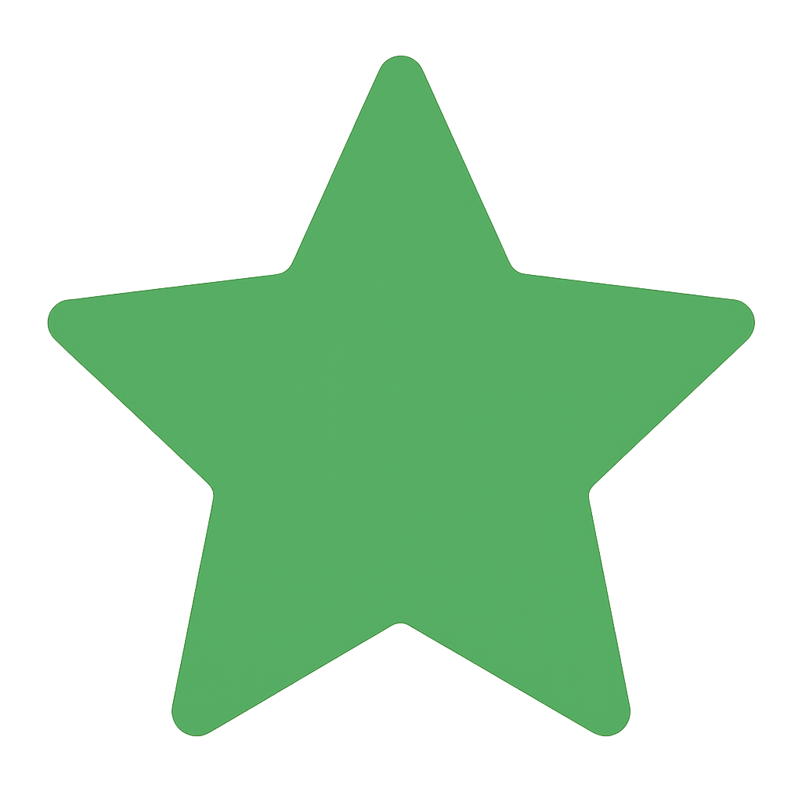
کودک زیر ۷ سال را باید به هر شکل آموزش داد و با روشهای تخصصی کمک کنیم استعدادهایش شکوفا شود.
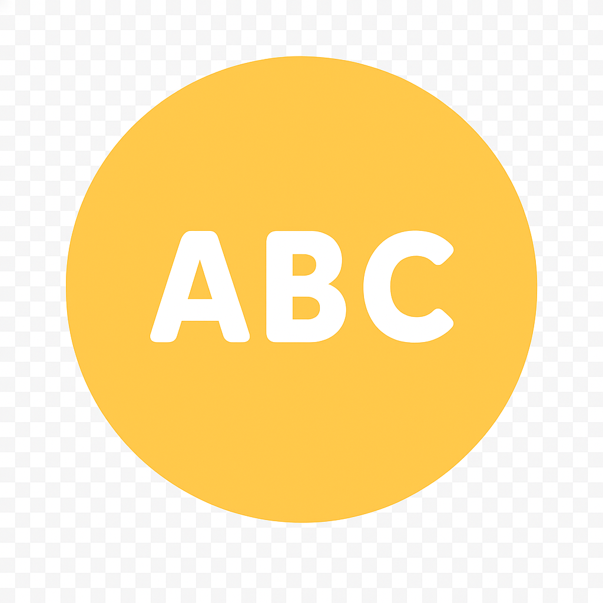
کودکان میتوانند زبان دوم را در مهد کودک ما با شیوههای صحیح، بهراحتی مانند زبان مادری یاد بگیرند.
آموزش یک پایه اساسی برای پیشرفت و توسعه هر فرد و جامعه است. اهمیت امر آموزش نه تنها به افزایش دانش و مهارتها محدود نمیشود، بلکه تأثیرات گستردهتری بر جنبههای مختلف زندگی دارد. امر آموزش ابزاری برای تجربهی جهان، تفکر انتقادی، توسعهی شخصیت و ایجاد تغییر در جامعه فراهم میکند.
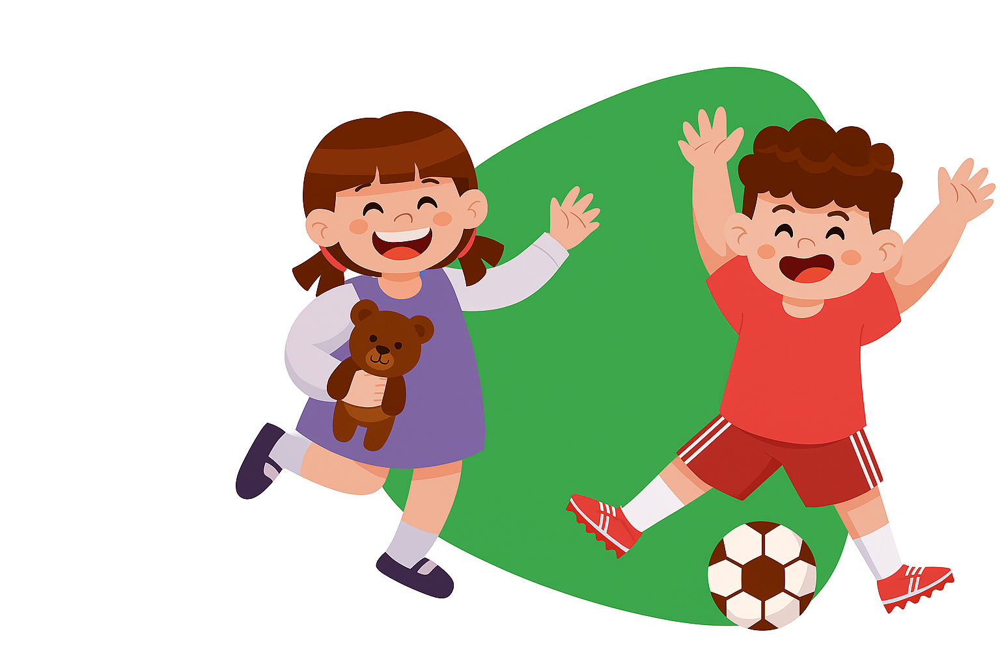
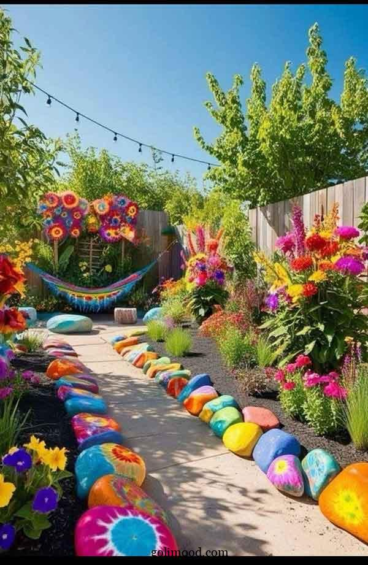
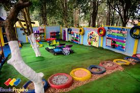
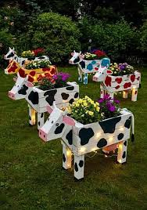
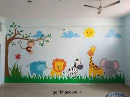
آخرین نوشتهها
مطالب خواندنی وبلاگ

پرتقال و لیمو علاوه بر ویتامینها، فیبر غذایی دارند که هضم بهتر و تنظیم قند خون را تسهیل میکند. همچنین آنتیاکسیدانهای موجود در آنها به سلامت قلب و کاهش التهابات کمک میکنند.
مطالعه مطلب>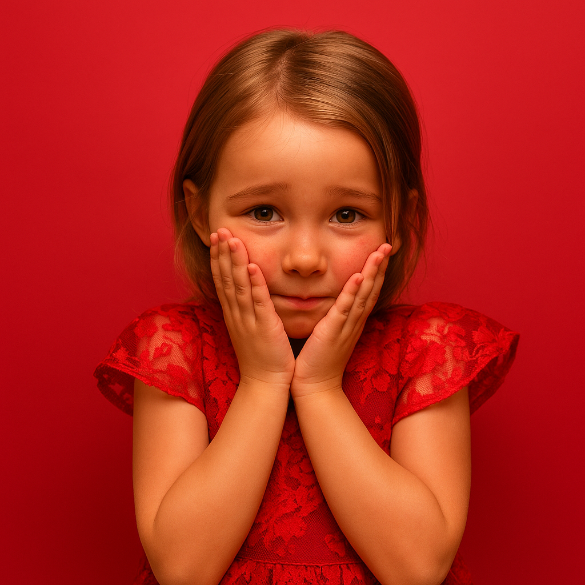
خجالت در کودکان احساسی است که با واکنشهای فیزیکی مانند سرخ شدن گونهها همراه میشود. این احساس ممکن است به دلیل ترس از قضاوت دیگران یا نگرانی از عملکرد ایجاد شود.
مطالعه مطلب>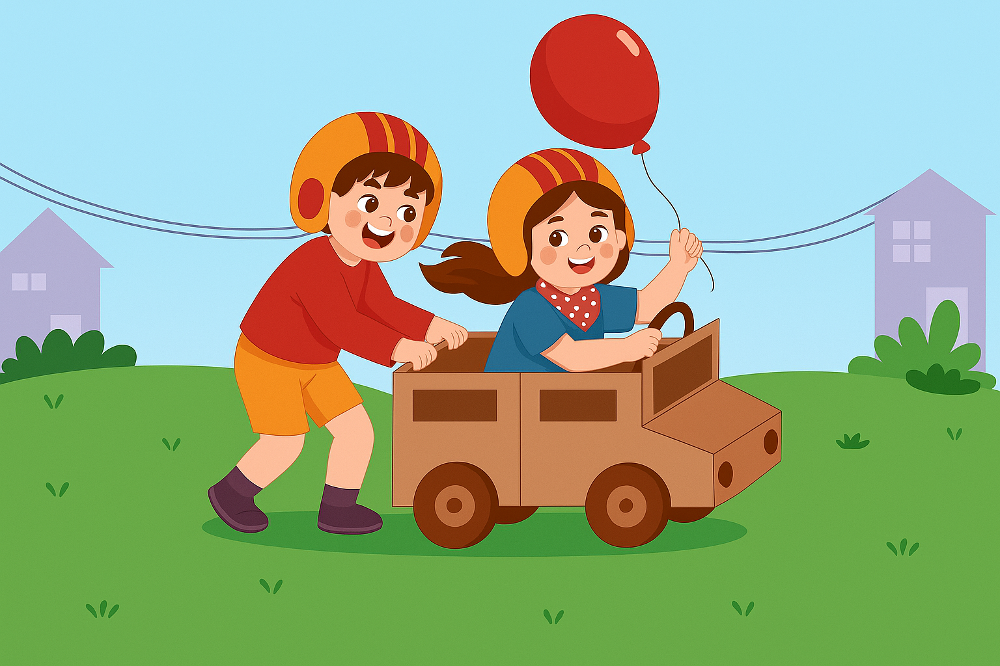